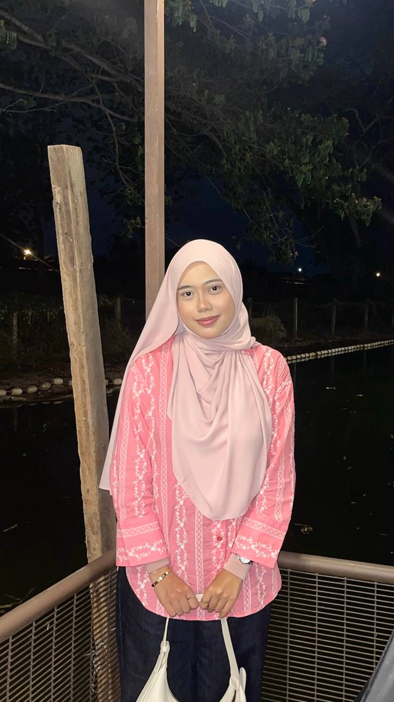

Developed for IML 254 - Introduction to Web Content Development
Universiti Teknologi MARA (UiTM) Kedah Campus
Nur Farah Izni Binti Kharuazman
© 2026 All Rights Reserved | Personal Website Project
Last Updated: April 1, 2026
This website is created to share about myself, my journey, and my interests. Feel free to explore and enjoy the aesthetic experience.

Name: Nur Farah Izni Binti Kharuazman
Student ID:
Course: IML 254
Class: KCDIM1444E
Lecturer's Name: Dr.Anum Shafeera Binti Amdan
University: UiTM Kedah
Soft • Calm • Aesthetic
Hi! My name is Nur Farah Izni Binti Kharuazman and I am currently a student at Universiti Teknologi MARA (UiTM) Kedah Campus.
I enjoy soft aesthetic vibes and love creating cute and creative websites.
This website is part of my learning journey in web content development.
The reason I chose pastel pink and mint green is because they represent calmness,
softness, and positivity, creating a peaceful and aesthetic environment.
"Living softly and creating beautifully in my own way."
Developed for IML 254 - Introduction to Web Content Development
Universiti Teknologi MARA (UiTM) Kedah Campus
Nur Farah Izni Binti Kharuazman
© 2026 All Rights Reserved | Personal Website Project
Last Updated: April 1, 2026